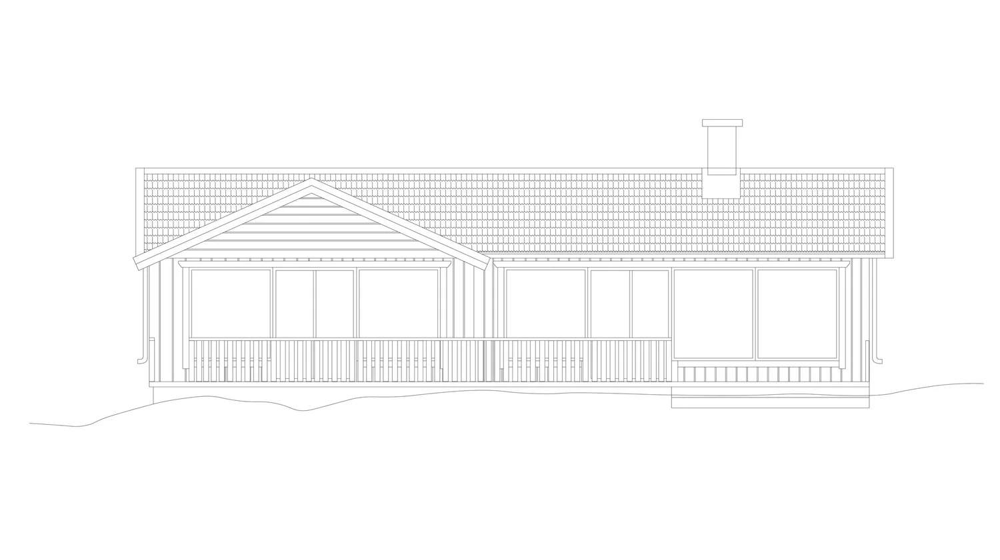
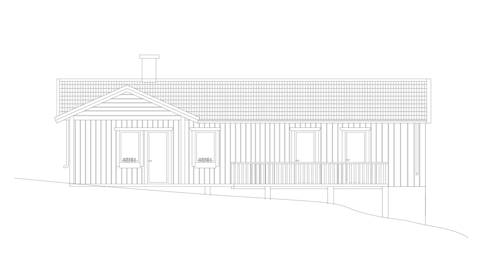
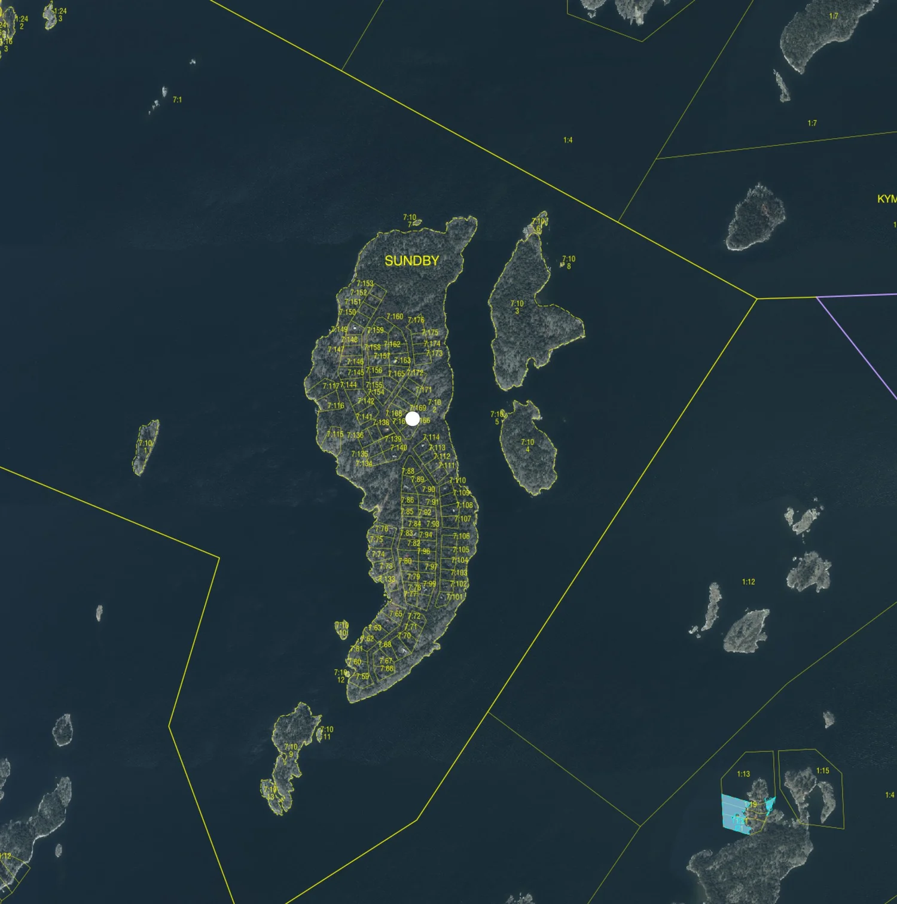
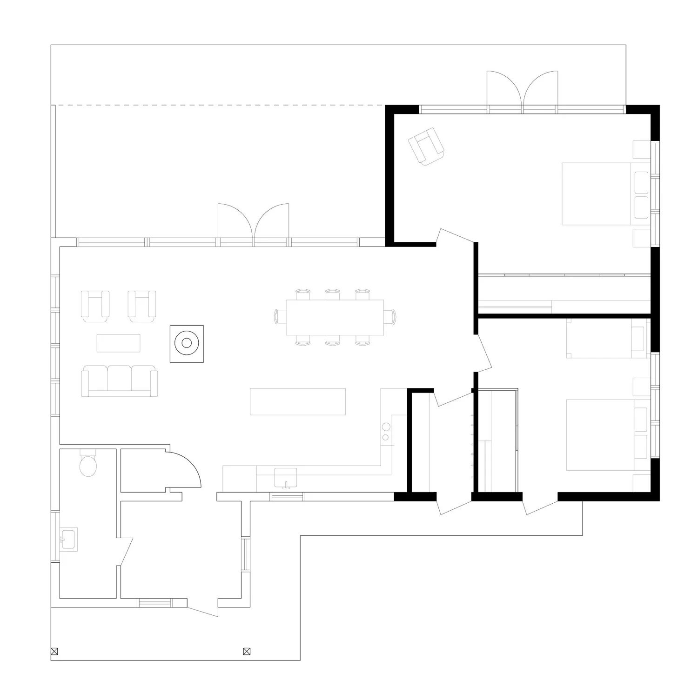
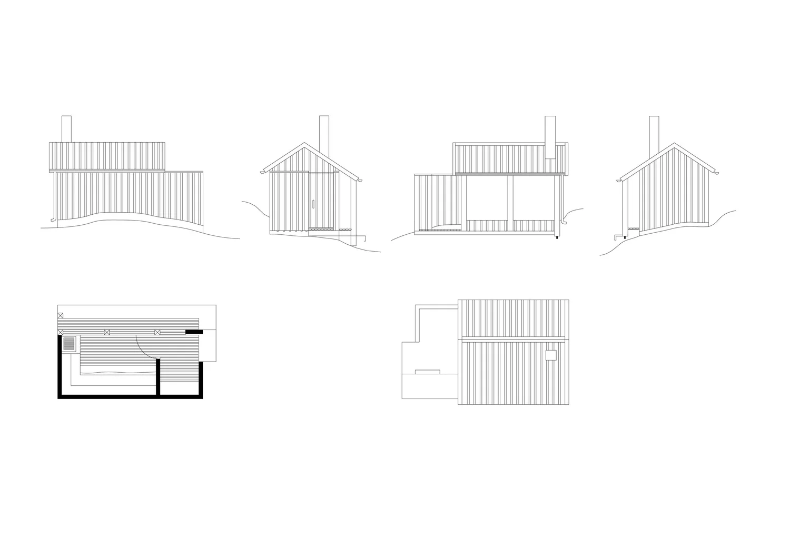

Stockholms skärgård · Pågående
Ombyggnad av fritidshus och ny bastu i Stockholms skärgård. Målet med tillbyggnaden av boningshuset och bastun är att göra så lite avtryck på naturen som möjligt. Ytor har placerats med eftertanke för att rama in utsikt och skydda för vind samt att uppfylla familjens behov för ökad funktionalitet.




